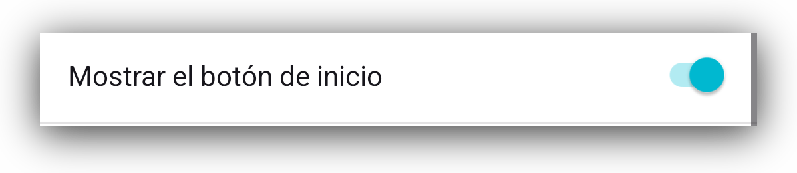
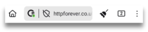
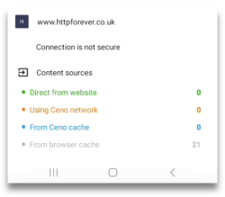
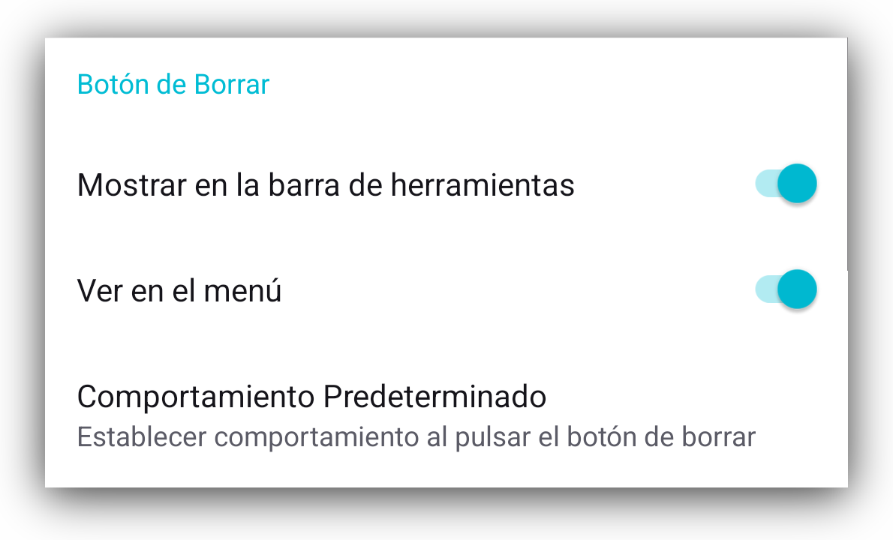
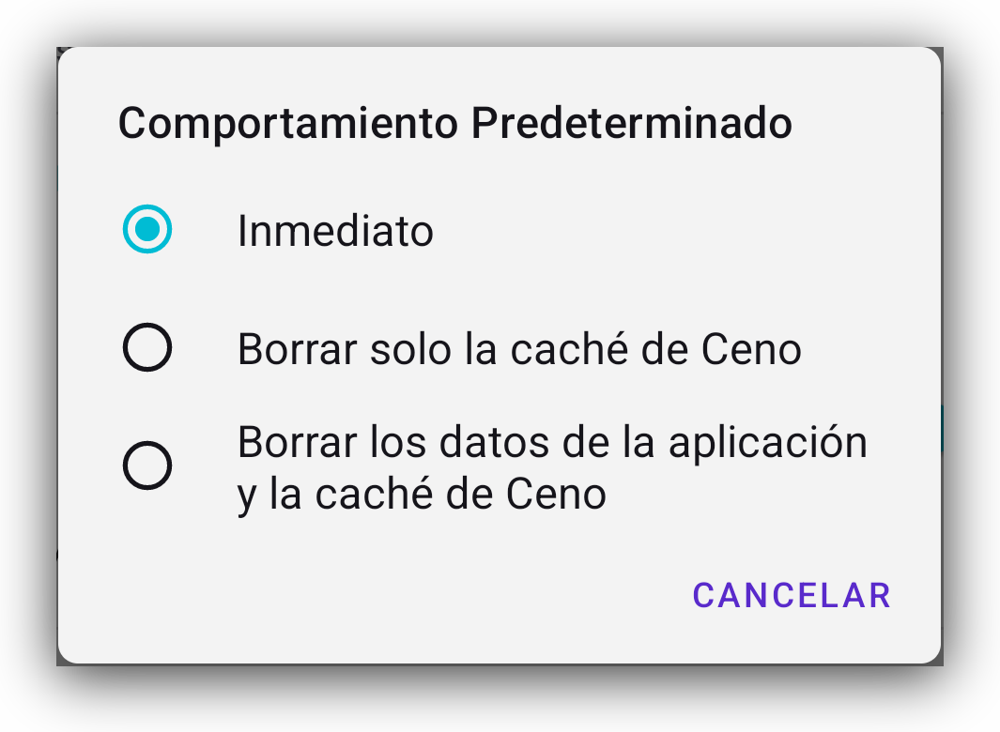
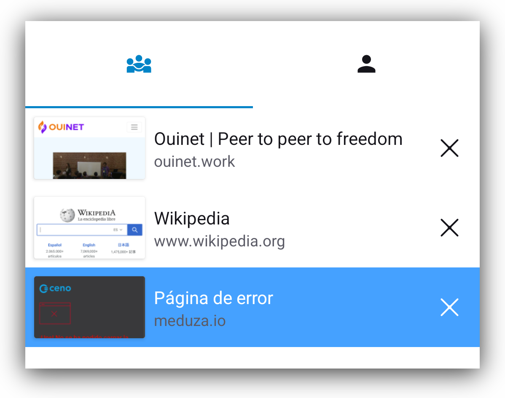
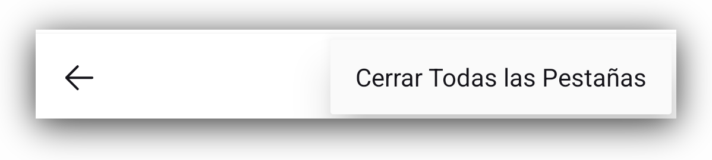
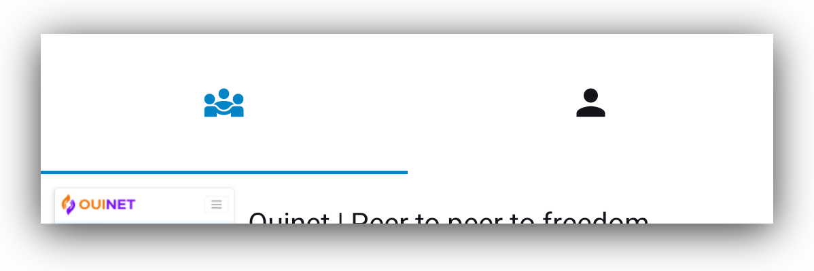
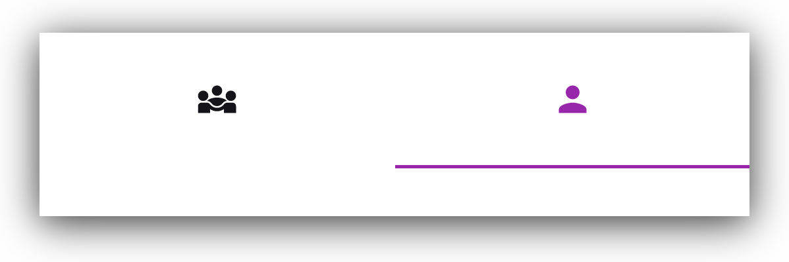
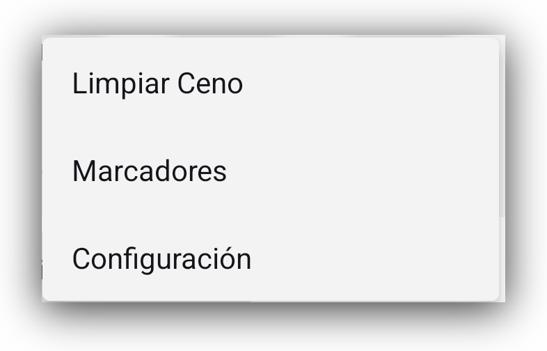

Funciones
Barra de Herramientas
En la parte inferior de la pantalla, verás una barra que contiene varios botones. Algunos se explican por si mismo, pero hay otros que quizá no tanto. Repasemos rápidamente esos botones:
Botón de Inicio
El primero es el familiar botón de Inicio.

Puedes configurar este botón para que se pueda ver o esté escondido, pero dirigiéndote a Ajustes > Personalizaciones > Mostrar botón de Inicio

Botón Ceno
El siguiente es el botón Ceno. Pulsándolo, este abrirá una pantalla de información que muestra desde donde se tomaron los componentes de la Página web. Esta pantalla se describe de una manera más detallada en las secciones de Público y Personal.
Botón de Conexión segura
Cuando entres la dirección de la Página web a la que quieres acceder, verás el
Botón de conexión segura, representado por un pequeño candado/escudo, que
indica que tu conexión a esa Página web es segura
Si el candado/escudo está tachado por una linea, significa que la conexión a esa
Página Web en particuales no es segura. Esto es los mismo que en resto de
navegadores.

Nota: Incluso aunque la conexión a esta Página web en concreto no sea segura, el icono de Ceno tendrá un punto verde. Este punto no indica que la conexión sea segura, si no que la información fue obtenida directamente de la Página web.
Si haces click en él, verás los detalles de esta conexión. A modo de ilustración, incluimos capturas de pantalla de conexiones seguras vs conexiones no seguras.


Botón Borrar
El primer botón en la parte derecha de la barra de direcciones es el botón Borrar, con forma de una pequeña escoba.
Pulsando en él se le da al usuario la opción de borrar todos los datos de Ceno, como si Ceno nunca hubiese sido usado, o para borrar todo lo que Ceno almacenó en la Caché. La primera opción borra todas la configuraciones, marcadores, preferencias y personalizaciones, mientras que el segundo solo borrará las Páginas webs que la aplicación de Ceno guardó en la Caché de tu dispositivo.

Si te diriges a Ajustes > Personalización > Botón Borrar podrás elegir si quieres que se vea el botón de borrado en la barra de herramientas o en cambio en el menú.

Pulsar en la opción Comportamiento por defecto abrirá un dialogo que te deja elegir entre que quieres que el botón Borrar haga cuando lo pulses. Te puede dar una petición, como en la Captura de pantalla de arriba, o puede Borrar todo el contenido de la Caché o incluso todos los datos de Ceno.

Botón de pestañas
El siguiente se compones de un rectángulo pequeño con un número dentro de él. Este número indica cuantas pestañas ha abierto el usuario.
Tapping on it opens a screen where you can see all the tabs that you have open.

You can close them one by one, if you tap on the vertical menu in the bottom right corner, you will get the option to close them all together.

When viewing the tab screen, at the top of that screen you will see the icons for Public or Personal browsing, and you can easily switch between them.
View when Public browsing icon is selected

View when Personal browsing is selected.

Vertical menu
What the three dot vertical menu on the far right hand side of the toolbar displays depends on the context.
- when you have a website page open, this menu will display options relevant to that page.

Most of the elements in this menu are self explanatory. But if you’re not familiar with the uBlock Origin, it is an ad and tracker blocker.
The reason we bundle it up with our Ceno browser is mostly to prevent unnecessarily caching advertisements and to avoid possibly caching unique identifiers associated with trackers.
To learn more about this ad and tracker blocker, please visit their webpage.
- If you tap on this menu when on the Ceno homepage, you will be able to see the item that allows you to clear Ceno (its action is the same as the small broom on the home screen).

- When you are on the tabs screen, tapping this menu will only give you the option to Close all tabs